Rostas Coordinator Guide
A complete guide to building rosters, managing replacements, and protecting your volunteers' energy.
Orchestrating with Empathy — 15 slides
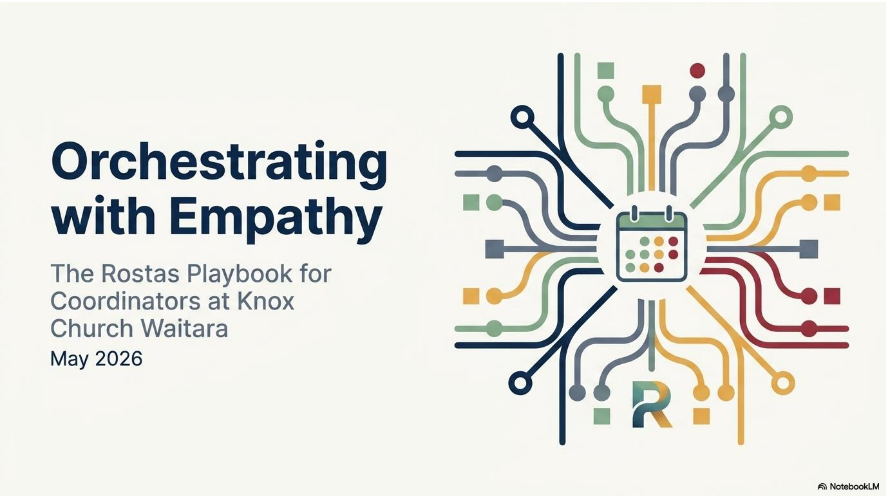
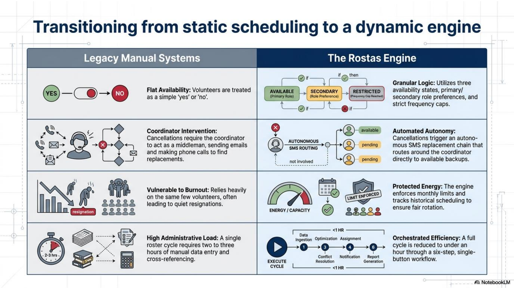
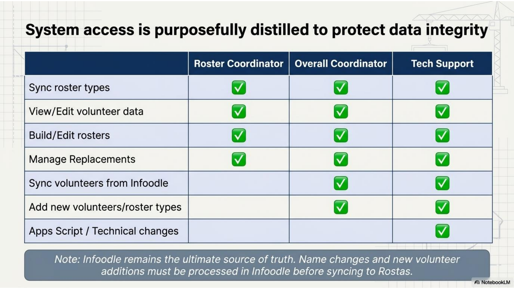
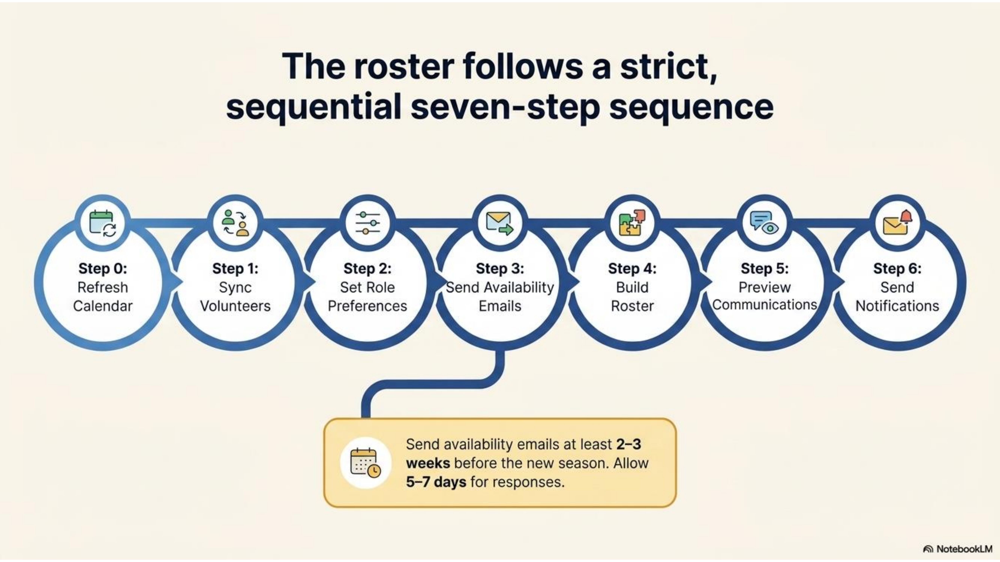
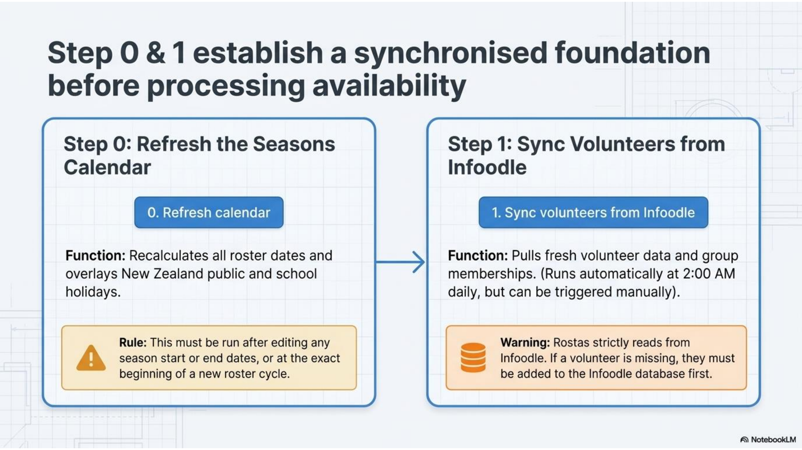
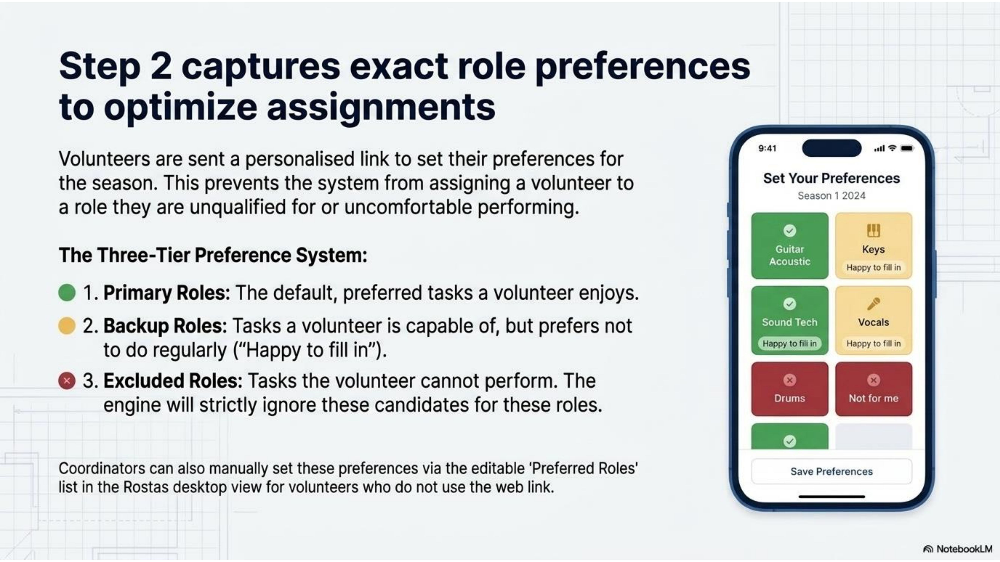
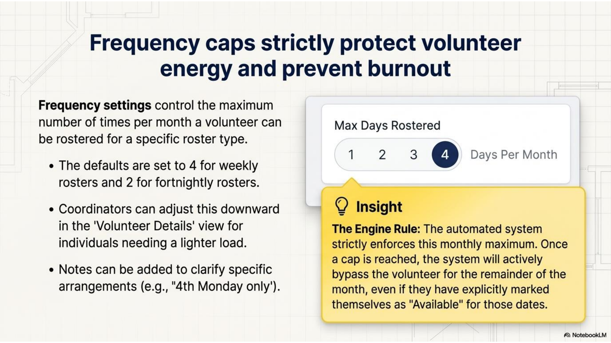
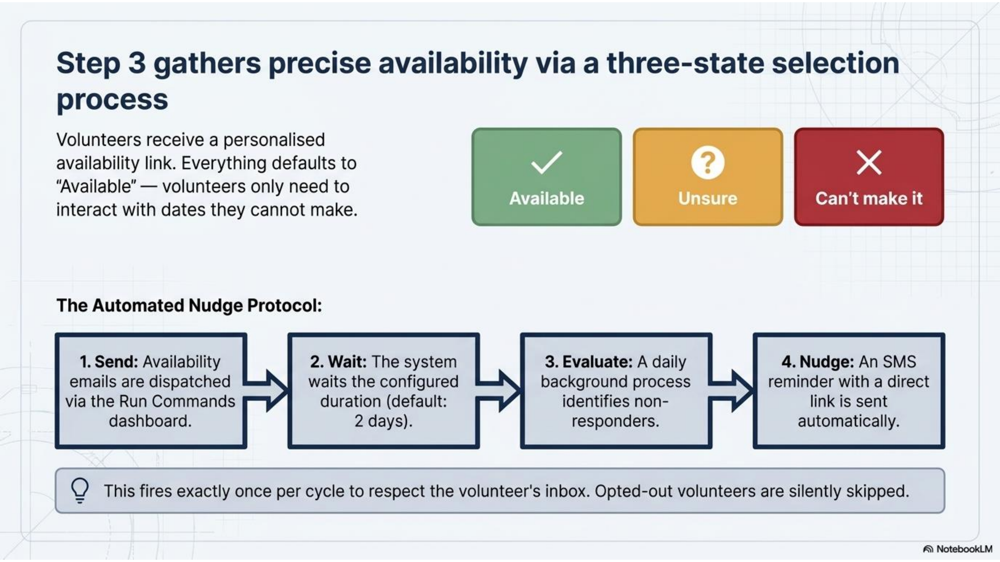
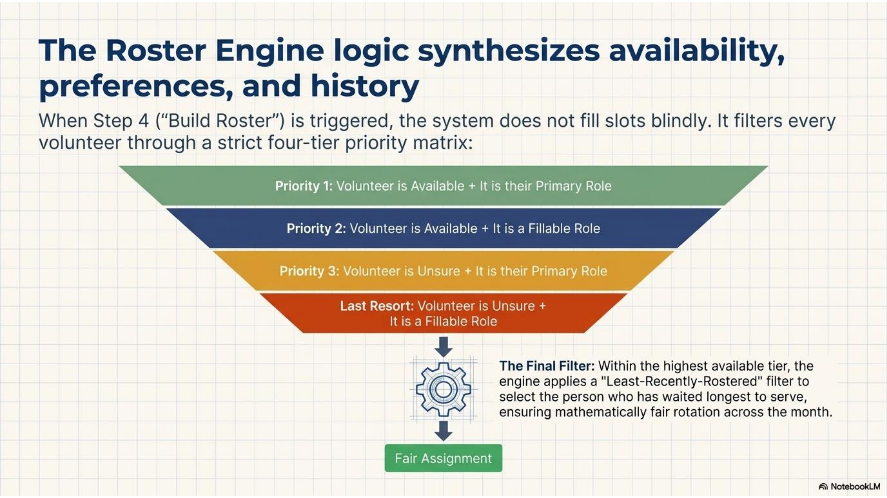
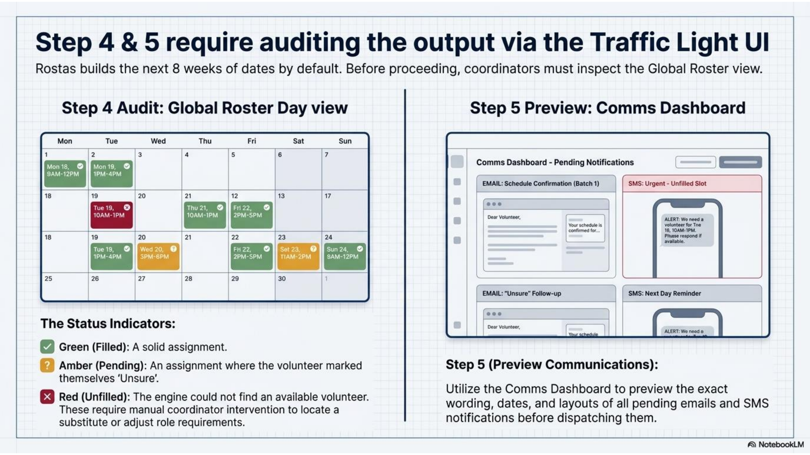
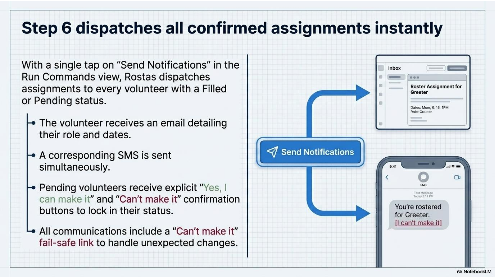
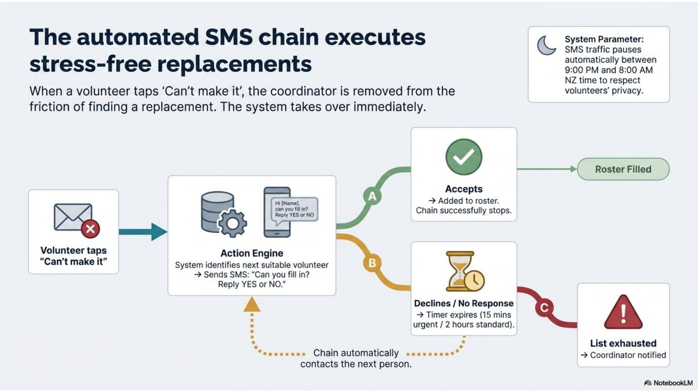
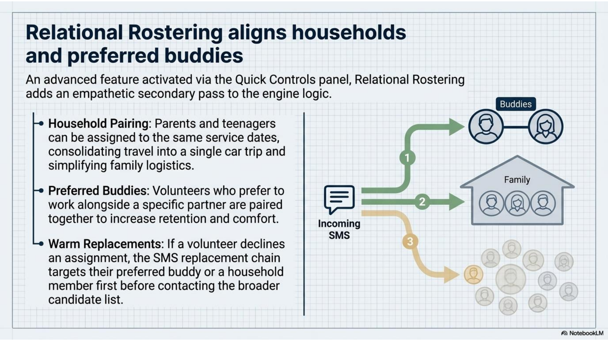
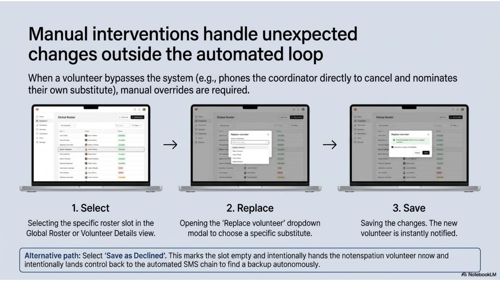
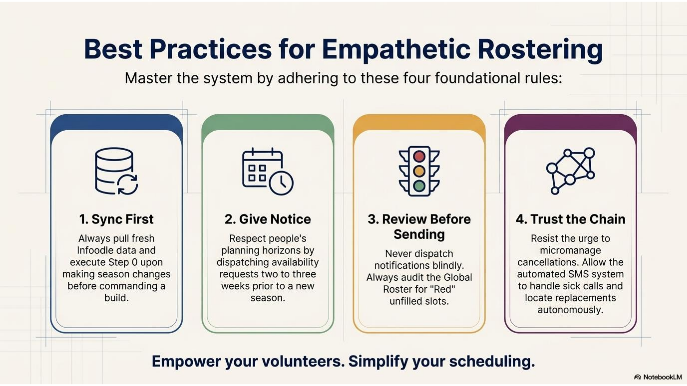
Introduction
Rostas is the coordinator app for managing Knox Church Waitara's volunteer rosters. It builds rosters for Sunday services, Music team, and Nourish (fortnightly), connects to Infoodle for volunteer data, and handles notifications, reminders, and SMS replacements automatically.
This guide covers everything you need: from collecting availability through to handling replacements. Part B covers Roster Coordinator tasks. Part C covers additional Overall Coordinator tasks (Lisa & Sharon).
Who Can Do What
| Task | Roster Coordinator | Overall Coordinator | Technical Owner (Guy) |
|---|---|---|---|
| Send availability emails | ✓ | ✓ | ✓ |
| Role preference setup | ✓ | ✓ | ✓ |
| Volunteer frequency settings | ✓ | ✓ | ✓ |
| Build, preview & send roster | ✓ | ✓ | ✓ |
| Season editing | ✓ | ✓ | ✓ |
| Manual volunteer replacement | ✓ | ✓ | ✓ |
| Volunteer sync from Infoodle | — | ✓ | ✓ |
| Config & settings | — | ✓ | ✓ |
| Adding volunteers (via Infoodle) | — | ✓ | ✓ |
| Adding a new roster type | — | ✓ | ✓ |
| Apps Script / technical changes | — | — | ✓ |
Part B covers all tasks marked ✓ for Roster Coordinators. Part C covers the additional tasks available to Overall Coordinators only.
1. Getting Started with Rostas
Rostas is built primarily for desktop access, though it can also be used on a tablet or mobile phone. Your coordinator will send you a link or invite when you are set up.
The Rostas Views
When you open Rostas you will see these views in the left-hand sidebar. Tap the relevant view to navigate to that area of the system.
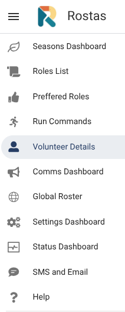
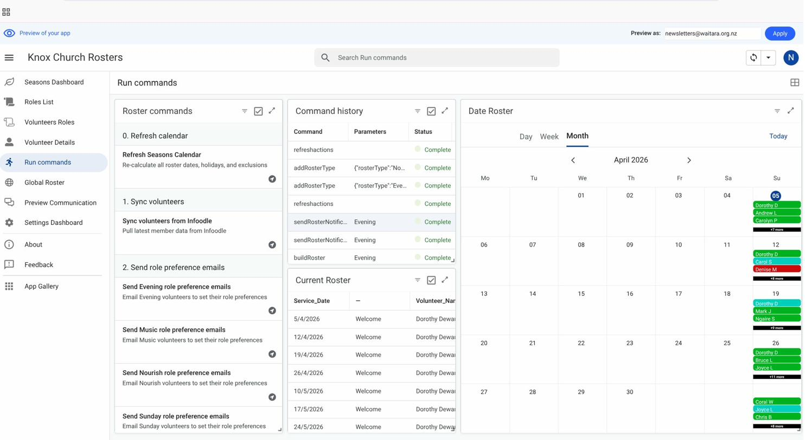
Reading Results
Every action writes a result message in the Command history panel. Common results:
- Filled: 12, Pending: 3, Unfilled: 0 — roster built successfully. Pending means a volunteer marked Unsure but has been provisionally assigned.
- Unfilled: 2 — two slots could not be filled. Review the roster and handle manually.
- Sent to: 14 volunteers — notification emails dispatched.
- Error: … — something went wrong. Note the message and contact tech support if it repeats.
2. The Roster Cycle
Each roster follows the same sequence of steps. Run them in order — skipping a step or running them out of order can produce unexpected results.
| Step | Action | What it does | Who |
|---|---|---|---|
| 0 | Refresh calendar | Recalculates season dates, overlays NZ public and school holidays. | Roster Coordinator |
| 1 | Sync volunteers | Pulls latest volunteer data from Infoodle (auto 2am or manual). | Overall Coordinator |
| 2 | Role preferences | Send role picker emails so volunteers set their roles — or set them yourself. | Roster Coordinator |
| 3 | Send availability emails | Ask volunteers which dates they are available for. | Roster Coordinator |
| 3b | Check frequency settings | Set a monthly cap per roster type per volunteer. | Roster Coordinator |
| 4 | Build roster | System assigns volunteers to roles based on availability & preferences. | Roster Coordinator |
| 6 | Preview communications | Check email template formatting, names, dates before sending. | Roster Coordinator |
| 5 | Send notifications | Volunteers receive assignment email and SMS. | Roster Coordinator |
3. Step 0 — Refresh the Seasons Calendar
Run this at the start of each roster build and any time you make changes to season dates. It recalculates all roster dates, overlays NZ public holidays and school holidays, and updates the calendar view.
In Rostas → Run Commands, tap 0. Refresh calendar. Wait for the result message to confirm completion. Check the Seasons Calendar view to confirm dates look correct.
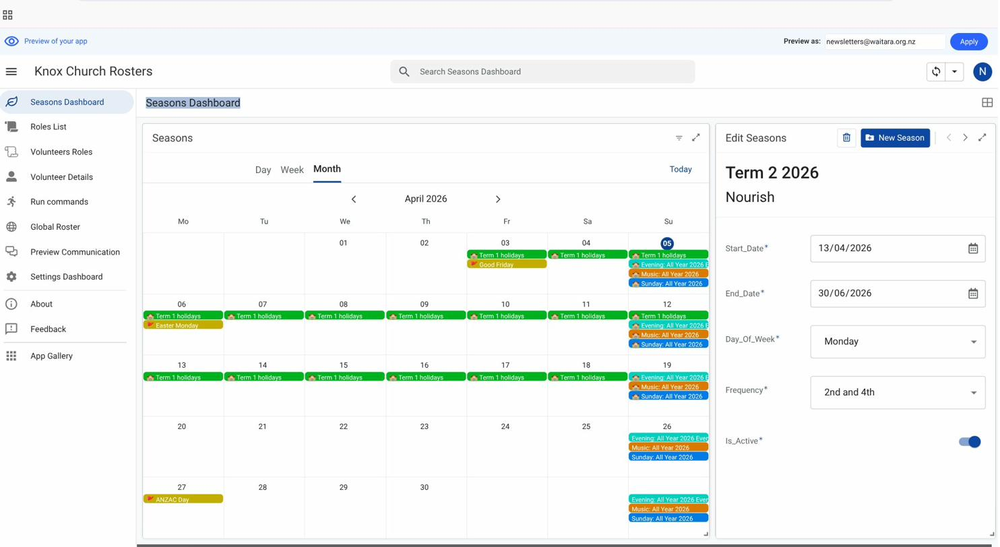
4. Step 2 — Role Preferences
Role preferences tell the system which roles each volunteer is willing to do. The system needs this information before it can build the roster.
Option A — Volunteers Set Their Own Preferences
Volunteers receive a personalised link and tap through each role, choosing 'Yes I do this', 'Happy to fill in', or 'Not for me'.
In Rostas → Run Commands, tap 2. Send role preference emails. Volunteers receive an email with a personalised link. Allow a few days for responses before building the roster. Check who has responded in the Volunteers Roles view.
Option B — You Set Preferences on Their Behalf
If a volunteer is not comfortable using the link, or for new volunteers who have not yet set preferences, you can set their roles directly in Rostas.
Open the Volunteers Roles view. Select the volunteer on the left, then review and edit their role assignments on the right.
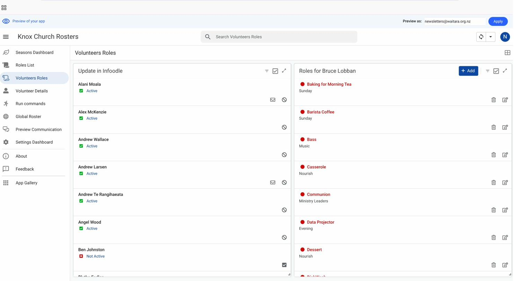
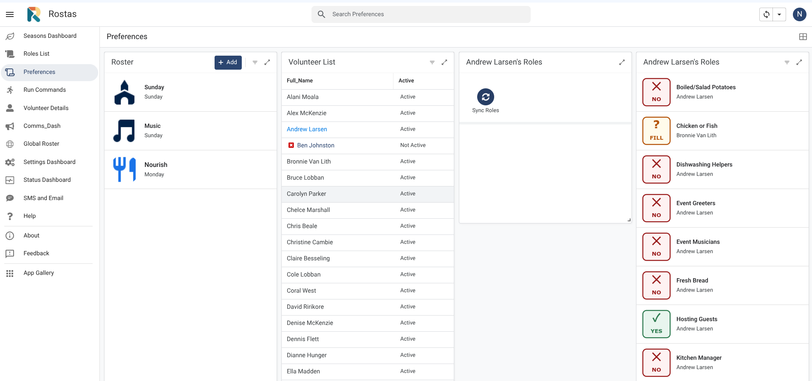
5. Volunteer Frequency Settings
Frequency settings control how many times per month a volunteer can be rostered for a given roster type. The roster engine strictly enforces these caps.
To set or update frequency:
- In Rostas, go to the Individual Details view. Select the volunteer from the left panel.
- Use the arrow buttons (‹ ›) to switch between roster types if the volunteer serves in more than one.
- In the Max Days Rostered panel (bottom centre), tap 1, 2, 3, or 4 to set the monthly maximum. The default is 4 for weekly rosters, 2 for fortnightly rosters.
- Add a note if helpful (e.g. '4th Monday only' or 'family commitments').
- Save. The change takes effect at the next roster build.
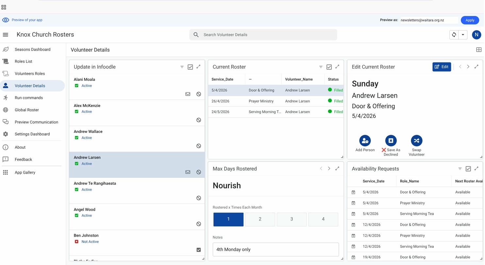
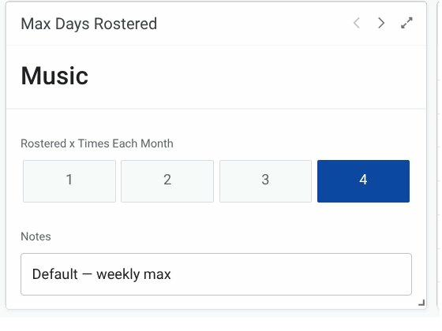
6. Step 3 — Send Availability Emails
Availability emails go to all active volunteers for your roster type. Each volunteer receives a personalised link showing the upcoming dates. They tap each date to mark themselves Available, Unsure, or Can't make it, then tap Save.
In Rostas → Run Commands, tap 3. Send availability emails. The result confirms how many emails were sent. Allow 5–7 days for volunteers to respond. Volunteers who do not respond are treated as Unavailable at roster build time.
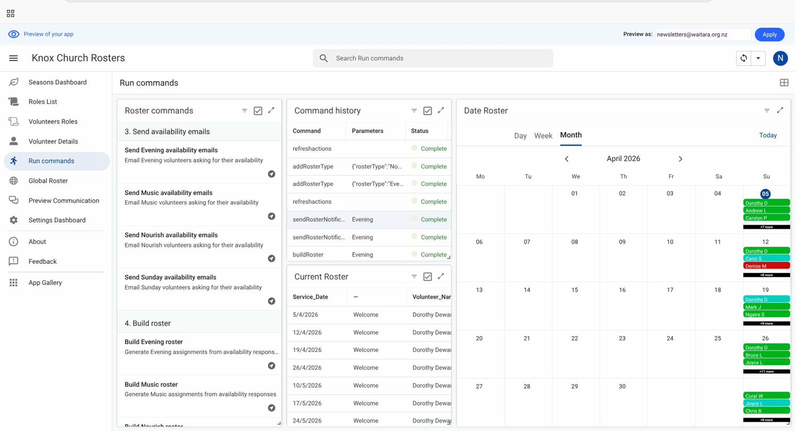
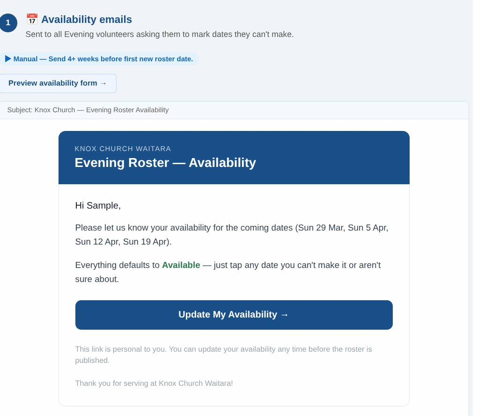
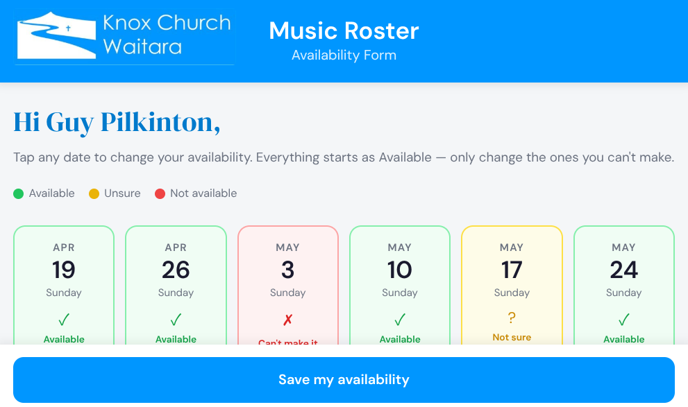
What if someone missed the email?
You can update a volunteer's availability directly in Rostas via the Individual Details view. Select the volunteer from the left panel, then use the Availability Requests panel (bottom right) to find the date and update their status.
7. Step 4 — Build the Roster
The roster engine assigns volunteers to roles based on their availability and role preferences. It works through four priority tiers and within each tier selects the volunteer who has been rostered least recently.
The Four Priority Tiers
| Tier | Availability | Role Match | Sort within tier |
|---|---|---|---|
| 1 | ✅ Available | Primary role (Yes, I do this) | Fewest assignments in lookback window, then longest since this specific role |
| 2 | ✅ Available | Fillable role (Happy to fill in) | Same as Tier 1 |
| 3 | ❓ Unsure | Primary role | Same as Tier 1 |
| 4 | ❓ Unsure | Fillable role | Same as Tier 1 |
In Rostas → Run Commands, tap 4. Build roster. The Music roster can take up to 10 minutes — this is normal. The system builds the next 8 weeks of dates by default (configurable per roster type in Settings — ROSTER_BUILD_WEEKS_{Type}). Check the result message: Filled, Pending, and Unfilled counts. Review the roster in the Global Roster view before sending.
Reviewing the Result — The Traffic Light System
Editing the Roster Before Sending
In the Global Roster view, tap or click any assignment to open the edit panel on the right. You will see three options:
- Replace Volunteer — a dropdown offers a list of suitable replacement volunteers.
- Save as Filled — manually confirm a Pending (Unsure) assignment.
- Save as Declined — this automatically starts the SMS replacement chain to find a substitute.
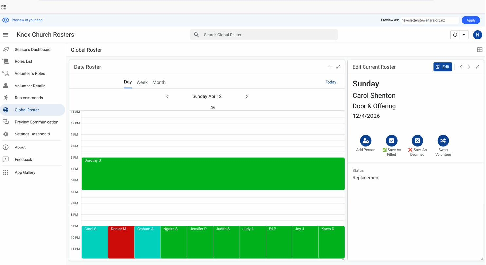
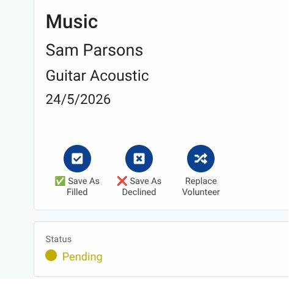
8. Step 6 — Preview Communications
Before sending notifications, use the Preview button to see exactly what the notification email and SMS will look like. This is the same view volunteers will see.
In Rostas → Run Commands, tap 6. Preview communications. A browser page opens showing the notification email template. Check volunteer names, roles, dates, and links all look correct. You can also adjust the wording of SMS messages here. Close the preview and proceed to Step 5 when satisfied.
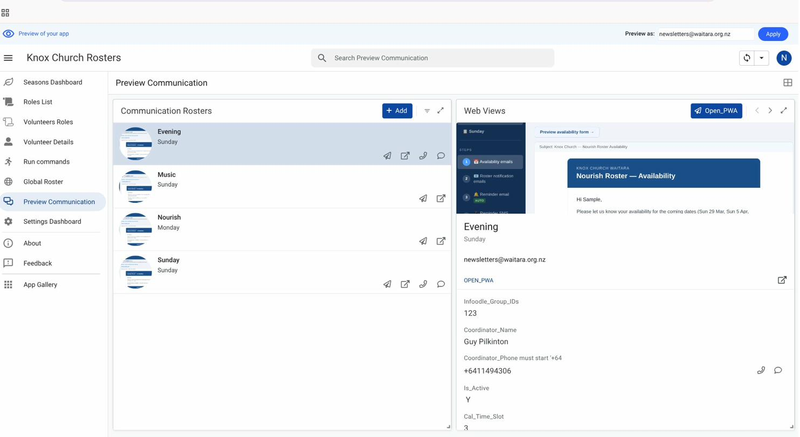
9. Step 5 — Send Notifications
Notifications go to every volunteer with a Filled or Pending assignment. Each volunteer receives an email with their role and date, and a link to confirm (for pending) or decline. An SMS is also sent.
In Rostas → Run Commands, tap 5. Send notifications. The result confirms how many volunteers were notified. Volunteers receive their email and SMS within a few minutes.
10. Manual Replacement
Use manual replacement when a volunteer contacts you directly — for example, they phone to say they cannot make it and suggest someone else, or you need to make a swap yourself without waiting for the SMS chain.
Go to Rostas → Global Roster or Individual Details view. Select the assignment you want to change. Tap Swap Volunteer, then select the replacement from the dropdown. Save. The system processes the swap within 1 minute. Check the Status column — it changes from Pending to Done when complete.
11. The SMS Replacement Chain
When a volunteer taps 'Can't make it' in their notification email, the system automatically begins contacting other available volunteers by SMS. You do not need to do anything.
What happens automatically:
- The system finds the next suitable available volunteer for that role and date.
- It sends them an SMS with a link to accept or decline.
- If they accept → they are added to the roster and the chain stops.
- If they decline or do not respond within 2 hours (standard) or 15 minutes (urgent/imminent events) → the next volunteer is contacted.
- If no one accepts → the coordinator receives an email letting you know the slot is still unfilled.
12. Checking the Status Dashboard
The Status Dashboard shows the status of all notifications sent from Rostas — emails, SMS reminders, and replacement requests. Check it after running any notification step to confirm delivery. If an error appears, use the Email Tech Support button to send an error report to Guy automatically.
Note: the full Audit Log is accessible to Technical Support only. If something does not look right, contact Tech Support and quote the error message.
Common things to look for:
- SMS FAILED — a text message did not deliver. Usually a Twilio issue. Note the error and contact Tech Support if it persists.
- Chain exhausted — no volunteer accepted the replacement. The slot is still unfilled.
- Assignment not found — a Manual Replace request used an incorrect assignment. Check and resubmit.
13. Step 1 — Volunteer Sync from Infoodle
Infoodle is the church's main membership database. Rostas syncs volunteer data from Infoodle every morning at 2am automatically. You can also run a manual sync at any time.
Run a manual sync when:
- A new volunteer has been added to Infoodle and needs to appear in Rostas immediately.
- A volunteer's contact details (email or mobile) have changed in Infoodle.
- You are about to build a roster and want to make sure you have the latest data.
In Rostas → Run Commands, tap 1. Sync volunteers from Infoodle. The sync runs in two steps and takes about 1–2 minutes. The result confirms how many volunteers were updated. Check the Volunteers view to confirm new or updated records appear.
Adding a New Volunteer
New volunteers must be added to Infoodle first and assigned to the correct Infoodle group for their roster type. Once in Infoodle, run a manual sync and they will appear in Rostas. You will then need to set their role preferences before they can be included in a roster build.
14. Settings and Configuration
System settings control how Rostas behaves — coordinator email addresses, reminder timing, and which features are active. Managed through the Settings Dashboard view in Rostas.
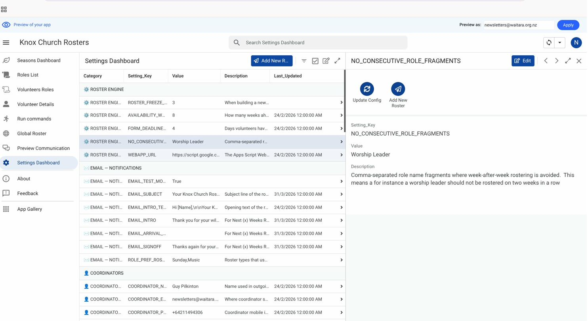
| ✅ Safe to Change | 🔒 Leave to Tech Support |
|---|---|
|
|
15. When to Contact Tech Support
Most day-to-day operations are fully self-contained in Rostas. The situations below require more technical involvement:
- The volunteer web app URL has changed and needs updating (after a system redeployment).
- Repeated errors appear in the Status Dashboard that do not resolve on their own.
- SMS messages stop delivering to volunteers.
- The system triggers need to be reinstalled (e.g. after a technical issue).
- Any change to Infoodle connection settings or API credentials.
- Anything that requires opening the Apps Script editor.
Knox Church Waitara · Rostas Coordinator Guide · April 2026 · [email protected]